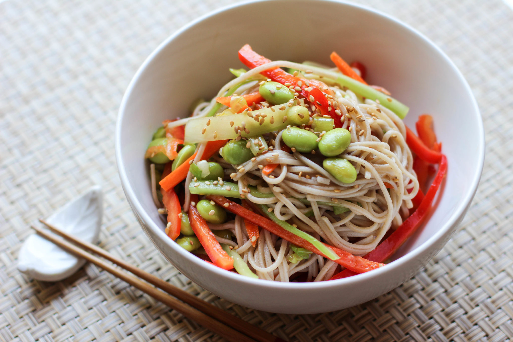

Home
Japanese Soba Noodle Salad

Description
Traditionally, this soba noodle salad is served cold. Mirin is a sweet wine that can be found in most Asian grocery stores. I do not know of any substitute.
Ingredients
- 1 pound soba noodles
- ½ tablespoon olive oil, or to taste
- 1 (1 1/2 inch) piece ginger root, minced
- 1 clove garlic, minced
- 2 tablespoons miso paste
- 2 tablespoons fresh lime juice
- 1 tablespoon mirin
- 3 green onions, chopped
- 2 tablespoons sesame seeds
- 1 tablespoon chopped cilantro, or to taste
Steps
- Bring lightly salted water to a boil in a large pot. Add soba noodles; cook, stirring occasionally until tender, about 5 minutes. Drain and rinse with cold water. Set aside.
- Heat olive oil in a skillet over medium heat. Cook and stir ginger and garlic until golden brown, about 3 minutes. Remove from heat.
- Mix ginger, garlic, miso paste, lime juice, and mirin together in a small bowl. Pour salad dressing mixture over soba noodles.
- Top with green onions, sesame seeds, and cilantro. Chill until serving.